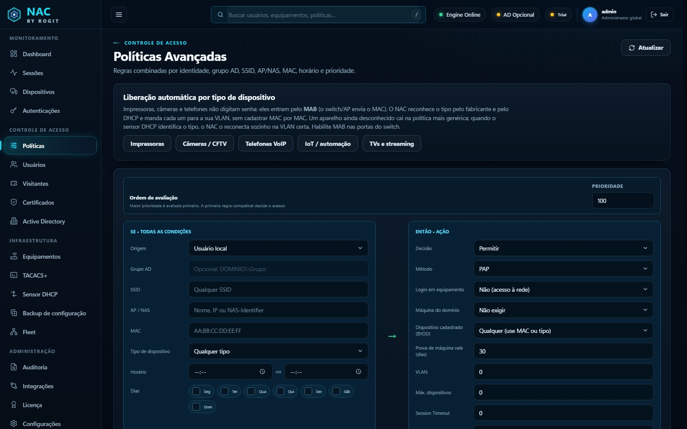
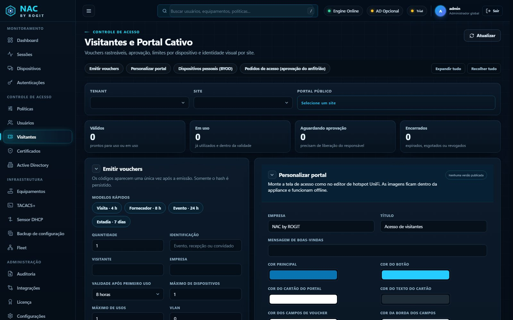
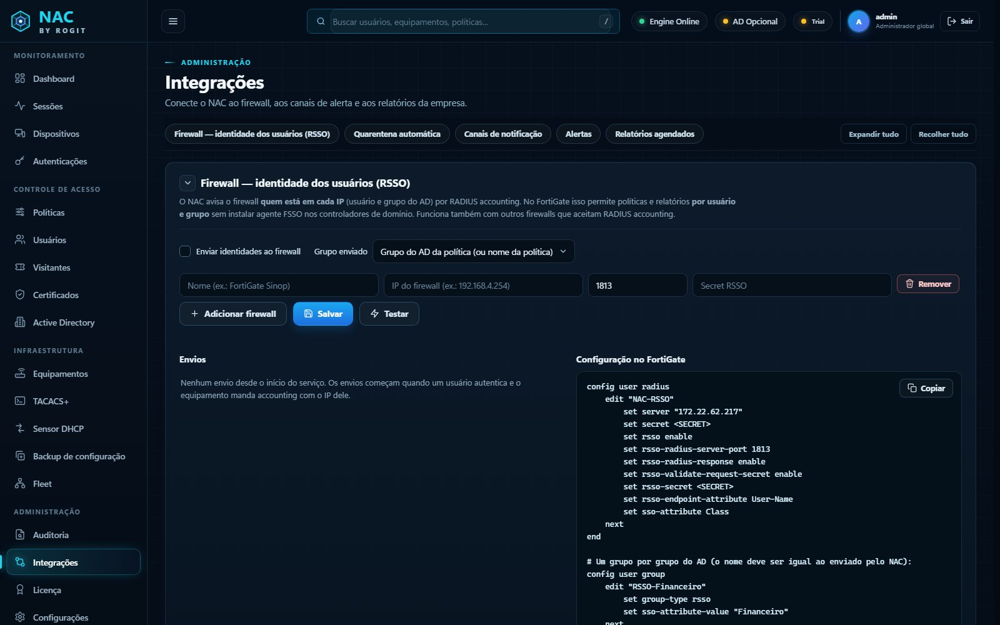

Dispositivos desconhecidos
Notebooks pessoais, câmeras e IoT entram em qualquer porta ou Wi-Fi.
Do Wi-Fi ao switch, em uma única appliance: autenticação 802.1X com o Active Directory, portal de visitantes, login individual nos equipamentos com TACACS+, backup de configuração e integração com FortiGate.

Quatro situações comuns nas empresas, que viram risco de segurança e de auditoria.
Notebooks pessoais, câmeras e IoT entram em qualquer porta ou Wi-Fi.
Todos usam o mesmo admin. Ninguém sabe quem digitou cada comando.
Uma VLAN muda e ninguém sabe quando, por quem nem como voltar.
A senha do Wi-Fi circula entre convidados e nunca expira.
Tudo num só painel, rodando na sua infraestrutura: os dados de acesso não saem da empresa.
802.1X, PEAP, EAP-TLS e MAB, com VLAN dinâmica por grupo do AD, SSID, equipamento e horário.
Vouchers com validade, portal com a marca da empresa e aprovação pelo anfitrião por e-mail.
Login nos switches com a conta do AD, autorização comando a comando e registro de tudo.
Cópia diária e após cada alteração, com histórico, diferenças linha a linha e autor.
Identidade por IP (RSSO) sem agente FSSO e quarentena automática de aparelhos com ameaça.
Painel em tempo real, auditoria, sensor DHCP, relatórios e alertas por Telegram, e-mail e WhatsApp.
No Wi-Fi ou na porta do switch, com usuário e senha ou pelo MAC do aparelho.
Switch, AP ou firewall consulta o NAC por RADIUS.
Confere o Active Directory e as políticas: grupo, local, horário e tipo de dispositivo.
O acesso é liberado no lugar certo, o FortiGate fica sabendo quem é e tudo é registrado.
A recepção não precisa mais passar a senha do Wi-Fi. Cada visitante recebe um código com prazo, e o anfitrião aprova com um clique.

Fim da senha "admin" compartilhada: quem sai da empresa perde o acesso aos switches junto com a conta do AD. E toda mudança de configuração fica salva, com o que mudou e quem mudou.

Dois appliances ativos com configuração replicada: se um parar, o outro continua autenticando.
TOTP no painel, papéis por função e administração separada por filial.
Senhas e secrets cifrados em repouso e pacotes de atualização assinados, também sem internet.
Licença por número de equipamentos (switches, APs e firewalls). Todos os módulos incluídos em todos os planos.
Sim. O NAC usa os padrões RADIUS (802.1X e MAB) e TACACS+, suportados por switches, APs e firewalls corporativos como Dell, Cisco, Huawei, HP, Aruba, Fortinet, Ubiquiti e MikroTik.
Não é obrigatório. O NAC também funciona com usuários locais. Com o AD, as políticas usam os grupos que a empresa já tem.
Na sua própria infraestrutura, como appliance em máquina virtual ou servidor. Os dados de acesso ficam dentro da empresa.
Sim. A ativação pode ser gradual, começando por uma filial, um andar ou só pelo Wi-Fi de visitantes.
Agende uma demonstração no seu ambiente, com os switches e APs que você já tem.